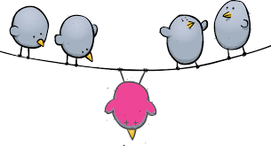

| PHRASAL VERB | DEFINITION | ILLUSTRATION |
|---|---|---|
| 1. Reach out | to try to communicate with a person or a group of people, usually in order to help or involve them: | |
| 2.Fit in | to feel that you belong to a particular group and are accepted by that group: |  |
| 3.Get into | to become interested in an activity or subject, or start being involved in an activity: | |
| 4.Follow through | When you follow through with something, you start it and you finish it in a satisfactory way. The ability to follow through with something is a highly attractive quality in any employee or job candidate. | |
| 5.Keep up with | We can say that we keep up with something when we want to stay updated and informed about it. If you work in IT, media, marketing, or any industry that’s constantly evolving, you know about keeping up with the newest trends and developments. |
Thanks to 9 Essential Phrasal Verbs for Work and Cambridge Dictionary for open sources